Installation et paramétrage de l’IDE Eclipse
Démonstration 3 du module 1
Cette démonstration décrit les principales étapes permettant la mise en place de l’environnement de développement
Déroulement
-
Si Eclipse n’est pas fourni :
Télécharger Eclipse (version « Eclipse IDE for Java EE Developers » ) à l’adresse suivante : https://www.eclipse.org/downloads/eclipse-packages/
Ou télécharger l’installateur à l’adresse suivante : https://www.eclipse.org/downloads/download.php?file=/oomph/epp/oxygen/R/eclipse-inst-win64.exe
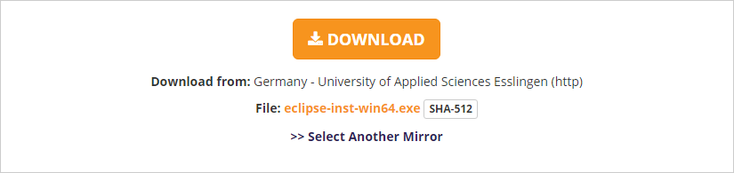 - Dans le premier cas, décompresser l’archive dans le répertoire de votre choix et Eclipse est installé.
Dans le second cas, suivre les étapes suivantes :- Exécuter l’exécutable téléchargé
- Choisir Eclipse IDE for Java Developers :
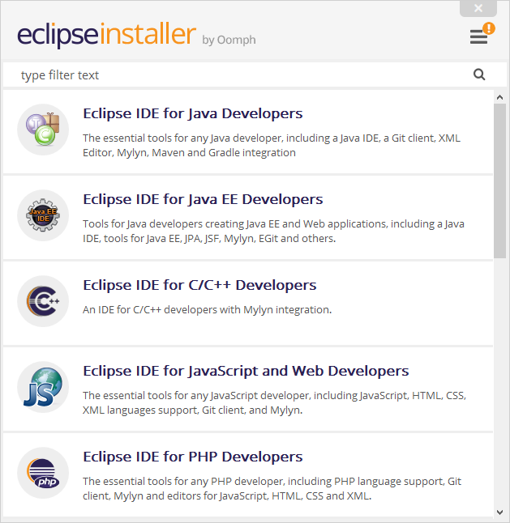 - Lancer l’installation et patienter
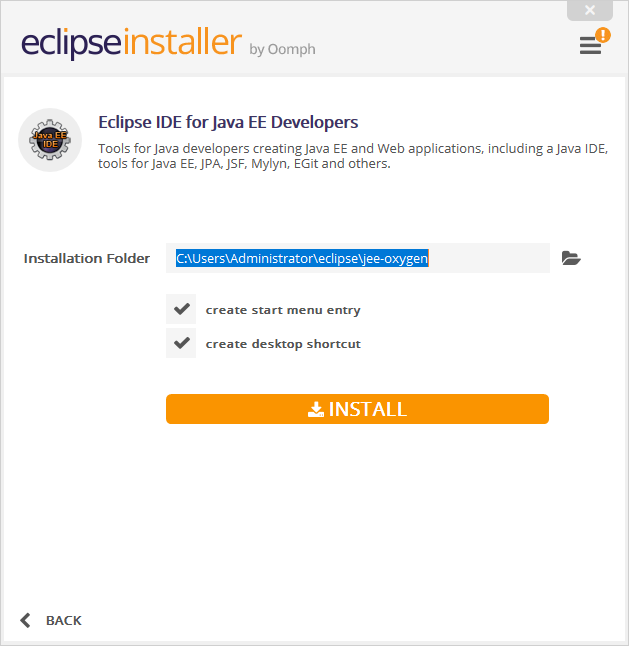
- Démarrer Eclipse :
- Choisir votre espace de travail (workspace) et s’en souvenir :

- Visualiser la page d’accueil et l’environnement de travail :
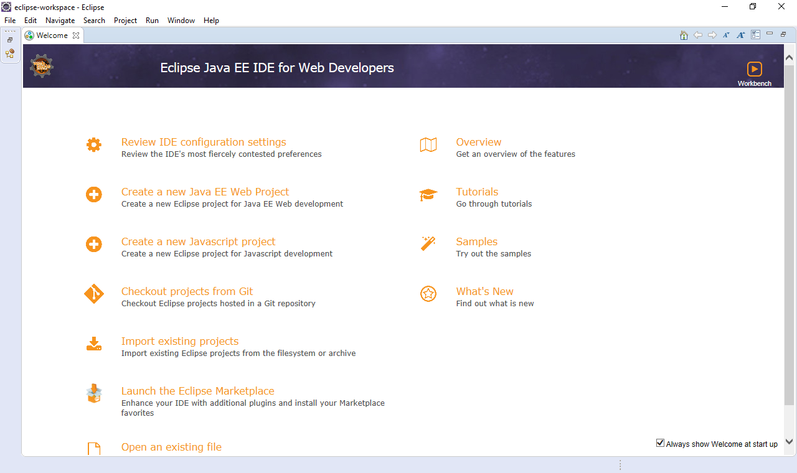
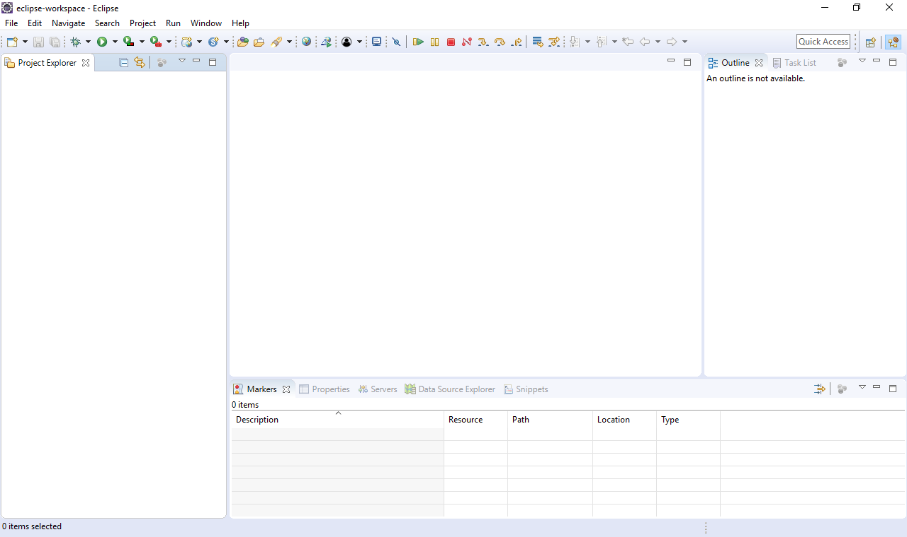 - Paramétrer Eclipse en effectuant les opérations suivantes :
- Définir l’encodage du contenu :
- Dans le menu Window→Preferences, filtrer sur le mot encoding :
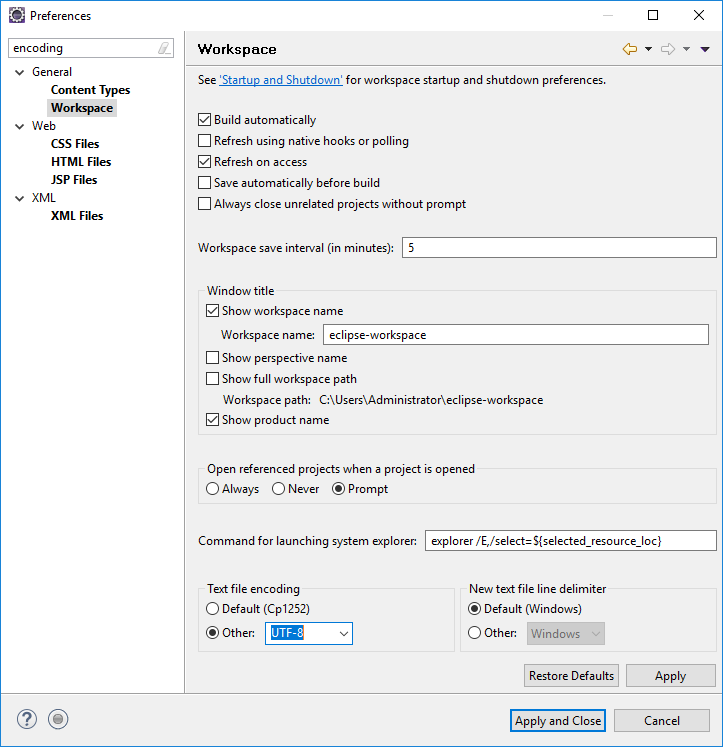 - Modifier dans les différents écrans d’administration l’encodage pour le positionner sur UTF-8.
- Dans le menu Window→Preferences, filtrer sur le mot encoding :
- Choisir son navigateur par défaut :
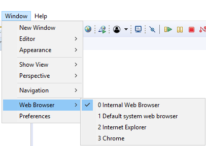 - Configurer Tomcat dans le menu WindowPreferences :
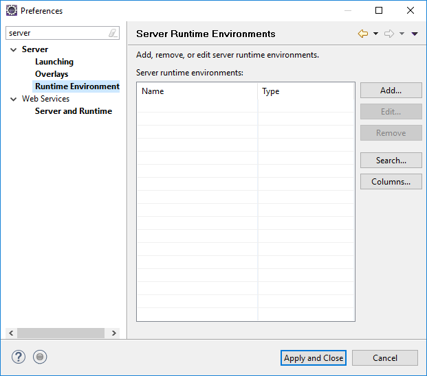
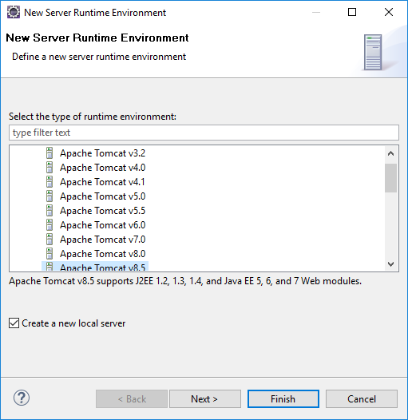
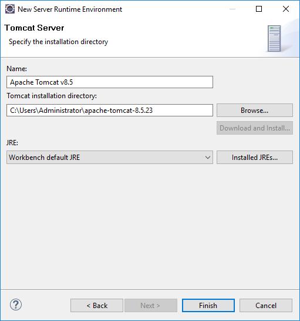
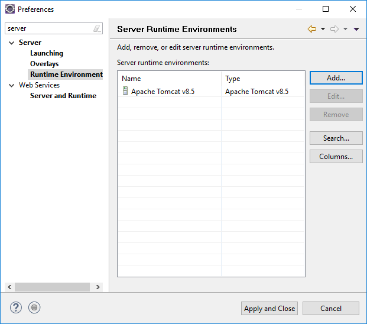 - Vérifier le bon fonctionnement de Tomcat :
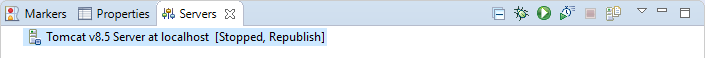
- Définir l’encodage du contenu :